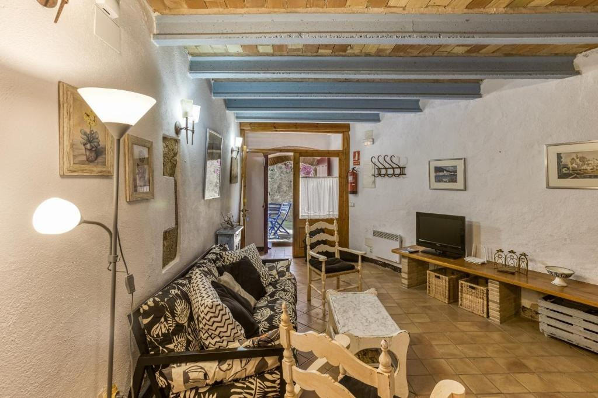
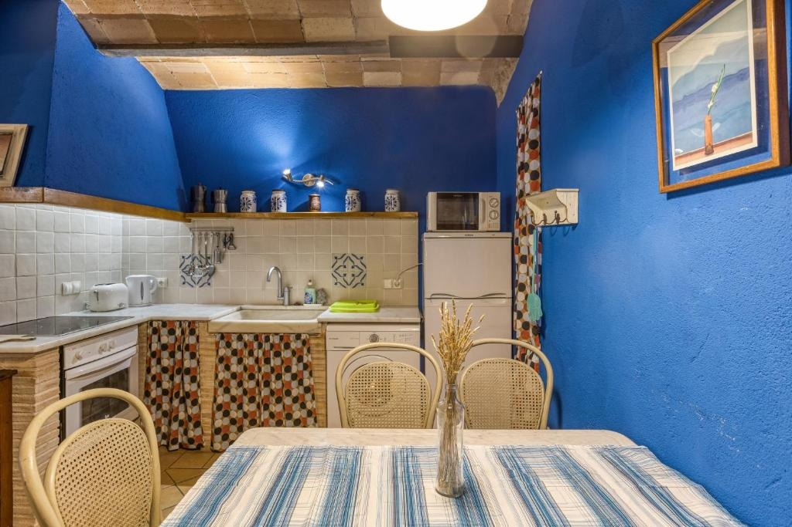
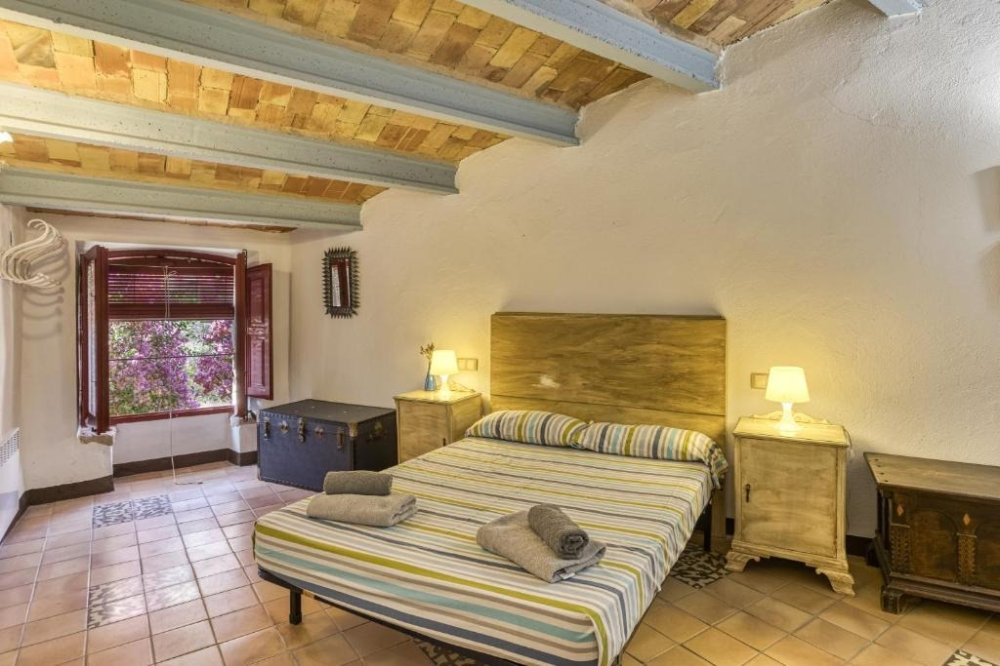

Casa Blava
Parets blaves, bigues de fusta i un pati amb bugenvíl·lia
Casa sencera
100 m²
2 dormitoris
4 llits · 1 bany
Fins a 5 persones
Famílies i amics
Admet mascotes
Pot comportar algun càrrec
La casa
Una casa blava amb molt d’encant
Casa Blava és una casa de 100 m² a Orriols, equipada amb WiFi gratuït i TV. Té 2 dormitoris i 4 llits, una cuina amb forn i microones, i un bany amb dutxa, articles d’higiene gratuïts i rentadora. Hi ha roba de llit i tovalloles.
La casa ofereix zona de jocs infantil, i als voltants es pot practicar ciclisme o senzillament gaudir del jardí. L’allotjament és sencer per a tu i el teu grup.
Sala d’estar
Sala amb parets blaves i llar de foc
Una sala amb parets blaves, bigues de fusta, sofàs còmodes, TV i llar de foc.
Un espai per descansar o llegir després d’un dia pels camins de l’Empordà.

Cuina
Cuina amb forn i microones
Cuina amb forn, microones, cafetera, bullidor elèctric i rentadora, amb una taula per a tothom.

Dormitoris
Dos dormitoris amb encant
2 dormitoris i 4 llits, amb roba de llit i tovalloles.
Ideal per a parelles, famílies i petits grups.

Exterior
Pati amb bugenvíl·lia
Un racó exterior amb flors i cadires blaves per gaudir del jardí i de la tranquil·litat d’Orriols.

A la casa
Serveis i comoditats
Tot el que necessites per a l’estada, a la casa sencera i només per a tu i el teu grup.
- Casa sencera només per a tu
- 2 dormitoris i 4 llits
- 1 bany
- TV
- Jardí
- Cuina amb forn i microones
- Cafetera i bullidor elèctric
- Bany amb dutxa i articles d’higiene gratuïts
- Rentadora
- WiFi gratuït
- Aparcament gratuït al carrer
- Admet mascotes (pot comportar algun càrrec)
- Zona de jocs infantil
- Roba de llit i tovalloles
- Habitacions sense fum
L’entorn
A prop de la casa
Orriols és un petit poble de l’Alt Empordà. Des de la casa hi ha esglésies, ermites i el castell de Vilademuls a pocs quilòmetres, i molts camins per fer en bicicleta o a peu. Distàncies calculades amb OpenStreetMap.
Església de Sant Joan
4,6 km
Castell de Vilademuls
4,6 km
Església de Sant Martí de Fellines
4,8 km
Església de Sant Vicenç
5,2 km
Ermita de Sant Sebastià
5,3 km
Església de Sant Martí
6,1 km
Aeroport de Girona - Costa Brava
35 km
Galeria d’imatges de Casa Blava
Totes les fotos de Casa Blava: espais, habitacions i racons de la casa.


Reserva
Vols viure Casa Blava?
Consulta disponibilitat i preus, o reserva directament a Booking.